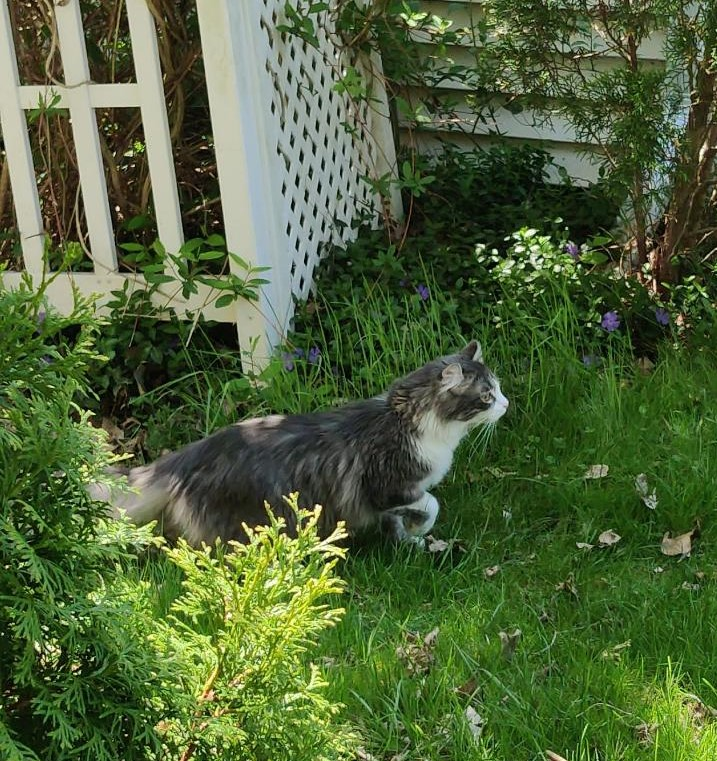

Did you know cat's are technically an invasive species?
Here's my boy Charlie - The Menace
Why is he a Menace??? LET ME TELL YOU
- never says thank you
- bites my feet (ow)
- uses his powers for evil
- does NOT pay rent


Here's how you can help prevent cats from deteriorating native bird populations
- Keep cats indoors
- Don't feed outdoor cats
- Spay and Neuter pets
- Raise Awareness
Read about it here!